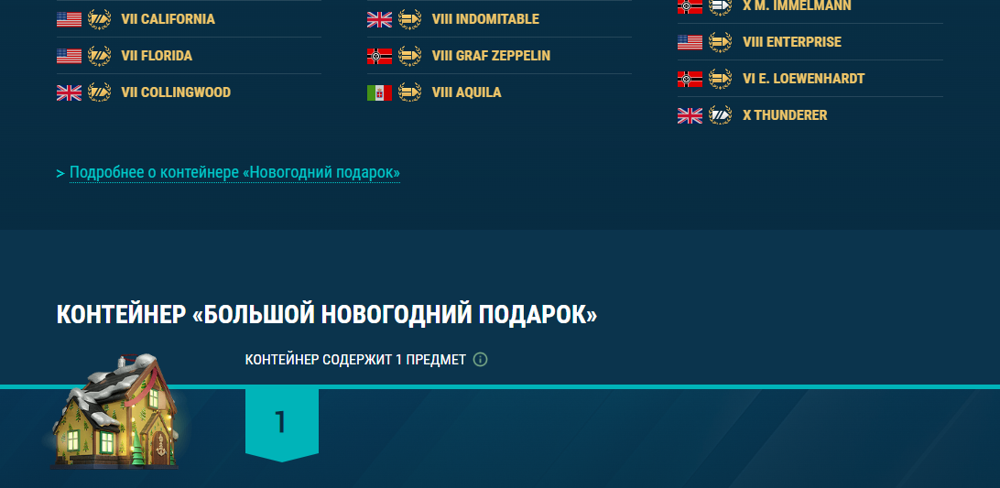

Ответ на задание сверстан в виде одной HTML страницы, с использованием адаптивной вёрстки с поддержкой разрешений от 400px до 1920px.
Расскажите, с какими сайтами других игровых компаний вы знакомы (или спешно познакомились прямо для этого тестового задания). Приведите пример 5 новостных публикаций, которые очень понравились вам по подаче информации.
| Ссылка на новость | Решаемая задача | Ключевые элементы |
|---|---|---|
|
Atomic Heart Главная страница Mundfish |
|
Кнопка "Играть" расположена в самом верху, чтобы сразу же
привлечь внимание посетителей сайта и предложить им
попробовать игру. Для тех, кто еще не знаком с игрой, рядом
располагается трейлер. Страница использует видеоролики и красочные изображения, чтобы продемонстрировать потенциальным покупателям геймплей и атмосферу игры, познакомить с миром и персонажами. Яркие цвета и высокое качество контента производят впечатление высококлассной продукции и привлекают внимание пользователей. Современный дизайн, легко доступная навигация и удобный пользовательский интерфейс делает использование сайта простым и интуитивно понятным. |
|
Fortnite Боевой пропуск Epic Games |
|
Большое изображение на верхней части страницы. Это изображение
привлекает внимание игроков, поскольку оно крупное и яркое, и
демонстрирует основных персонажей, которые будут доступны в
рамках боевого пропуска. Описание боевого пропуска помогает убедить игроков купить боевой пропус. Оно содержит информацию о том, что входит в боевой пропуск и какие преимущества он дает игрокам. Галерея изображений показывает новые предметы и косметические изменения. Они лучшают визуальное восприятие и позволяют игрокам увидеть, что они получат при покупке. Кнопка "КУПИТЬ СЕЙЧАС" обращает внимание игроков и упрощает покупку. |
|
Honkai: Star Rail Персонажи Hoyoverse |
|
Большие и красочные изображения персонажей привлекают внимание
и позволяют увидеть, как выглядят персонажи, какие у них есть
особенности и способности. Описание персонажей содержит
информацию о происхождении, личности, способностях и истории.
Оно позволяет игрокам узнать больше о персонажах и увеличивает
их интерес к ним. Интерактивные элементы, такие как выбор персонажей по локациям и возможность услышать голос персонажа, звуковое сопровождение и подходящий стилистике игры фон создают приятное визуальное восприятие и эффект погружения. Все это работает вместе, привлекая интерес игрока к персонажам и игре в целом. |
|
League of Legends Как играть Riot Games |
|
Краткое введение в игру: на главной странице игроки могут
ознакомиться с общей информацией об игре. Страница содержит
видеоролики, которые помогают понять, как играть в LoL. Эти
видео объясняют основы игры, включая управление, механику
игрового процесса, карты и режимы игры. Страница предоставляет информацию о героях и их способностях, помогает игрокам выбрать чемпиона, который соответствует их стилю игры, и понимать, как использовать его способности в бою. Интерактивное краткое руководство в виде карты объясняют основные понятия и механику игры. |
|
Dota 2 Герои Valve |
|
Страница отлично справляется с задачей ознакомить пользователя
с разнообразием героев. Дизайн таблицы персонажей и страницы конкретного героя включает в себя интерактивные элементы, оформленные в той же стилистике, что и в игре. Предложены фильтры, которые позволяют игрокам отбирать героев по различным параметрам, таким как основной атрибут, сложность. На странице героя появляется его изображение в виде модельки из игры, история и характеристики. Внизу представлена вся информация о способностях. Есть удобная навигация между героями. |
Сравните две статьи (одна поновее, вторая — прошлогодняя) и
расскажите, что изменилось в лучшую или худшую сторону, поделитесь
своими общими впечатлениями, скажите, что вы оставили бы, а что
стоит изменить (и почему).
Некоторые элементы были переделаны и представлены в виде
скриншотов.
Сравнение статей
Контент обновлений стал удобно оформлен в раскрывающиеся блоки.
На новой странице появился блок "Рекомендуем к прочтению", который хорошо привлекает внимание пользователя к другим статьям, и кнопка «Обсудить на форуме», с помощью которой удобно сразу перейти к обсуждению обновления.
Состав контейнера стал гораздо лучше восприниматься за счет добавления карточек с содержимым, появляется описание по наведению на предмет. Под каждым из них есть кнопка «Подробнее о контейнере», в которой раскрыты все детали получения предметов.
На странице старого патч-ноута, при указании о подробностях в отдельной статье, есть удобный переход на дополняющую статью по клику на слово. На новой странице такая возможность отсутствует в некоторых частях (например, нет перехода к боевому пропуску).
Что можно изменить
На обеих страницах не получается проскролить нажатием на колесико. Его нажатие вызывает открытие страницы с новостями. Можно или убрать такой переход, или добавить в удобном месте кнопку возвращения вверх страницы.
В новом патче была возможность получить бесплатные контейнеры. Об этом есть сообщение, но его можно выделить цветом и жирным шрифтом, чтоб привлечь внимание пользователей. Это особенно важно, так как некоторые игроки заходят в игру лишь с новым обновлением и за новыми наградами, но часть из них после такого втягивается в игру заново.
Если статья еще не появилась, хорошим решением было бы при наведении на предполагаемую ссылку добавить сообщение о том, что статья появится в будущем.
В блоке с лутбоксами есть проблема: надпись «Подробнее о контейнере» располагается уже на фоне другого цвета, который выглядит как секция следующего контейнера. В качестве решения, спойлер можно поместить в блок-контейнер соответствующего лутбокса.
Изображения кораблей, выходящие за ширину текста, отвлекают внимание и выглядят слишком громоздкими, нарушают структуру смысловых блоков. Визуально тяжело воспринимать, что к чему относится. В некоторых местах изображение занимает всю высоту экрана. Учитывая, что это повторяется не один раз, некоторые блоки можно выполнить в виде, где изображение помещается на фон, а поверх размещается описание. На старой странице есть такая же проблема со скриншотами интерфейса. Сам скриншот занимает всю ширину контейнера, но на новой детали нет яркого акцента.
Страницы вмещают в себя и анонс обновления, и все детали, информации становится слишком много. Такую страницу тяжело читать. Хорошее решение, которое можно заметить на других порталах (например, Мир Танков,) - статья-анонс обновления со всеми ключевыми моментами, которая включает в себя ссылку-переход на страницу с основными изменениями, в которой игроки могут ознакомиться со всеми подробностями.
Рассмотрите и сделайте анализ страницы «Об игре», перечислите
ошибки в дизайне, вёрстке, как это можно улучшить, почему и какой
эффект от улучшения можно получить.
Некоторые элементы были переделаны и представлены в виде
скриншотов.
Панель навигации
Иконки перехода по ссылке перегружают меню. Фоновый цвет навигации и футера совпадает с фоном страницы. Можно затемнить для контраста с основным контентом. Меньше отвлекает внимание, гармонично выглядит.
Заголовок страницы
Бросаются в глаза пунктуация и кавычки. В веб-дизайне знаки в заголовках почти не используются. Сам текст меркнет на фоне видео за счет маленького шрифта и начертания, отсутствует типографический контраст. Занимает маленькую область. Видео снизу наезжают на фоновое видео, картинка на картинке создает перегруженность контентом. Относясь к заголовку, видео не вмещаются на экране полностью и обрезаются наполовину. В сумме получается так, что взгляду не за что зацепиться из-за перенасыщения элементами.
Вариант решения - затемнить фон, немного уменьшить подборку ознакомительных видео внизу, выделить заголовок жирным шрифтом и более насыщенным цветом. Взгляд сразу цепляется к центру экрана, в котором как раз удобно размещена кнопка "Скачать игру".
Заголовки блоков
Также как и в начале страницы, глазу не за что зацепиться из-за отсутствия контраста. Можно исправить, добавив жирность шрифта и цвет.
Текст
При просмотре в полноэкранном режиме в разрешении 1920х1080 есть проблема - очень много текстовых блоков занимают 1-2 строки и растянуты на всю ширину контейнера.
Классы кораблей
Много пустого пространства вокруг изображении. Из-за того, что текст появляется только при наведении, глядя на страницу виден слишком большой отступ, смысловой блок визуально теряется.
Нации
Заголовок и название наций имеет практически один и тот же вид, ряд флагов создает разделитель и опять же создается впечатление, что это разные смысловые блоки. Снизу блока много пустого пространства, пока сверху присутствует изображение флага, заголовок и текст. На цифрах можно сделать акцент, как на основной игровой информации.
Смена погоды в бою
При смещении текста блок смотрится интереснее: текст не является растянутой линией и нет ощущения пустоты справа.
Галерея
Не хватает слайдера. Изображения вылезают за границы контейнера, на котором располагаются все элементы страницы (не считая фоновых), создает ощущение перегруженности. Между полосой изображений и текстом нет отступа, который до этого соблюдался между разным контентом в остальных блоках.
Иконки
При просмотре с мобильного устройства иконки вытягиваются в колонку, занимая все пространство. Логичнее разместить их как на полном экране – в ряд.
Футер
Фраза из заголовка Стань командиром и начни путь к славе! хорошо будет смотреться в конце страницы. Ее можно выделить ярче, акцентировать внимание на блоке "Скачать игру".
Реализуйте интерактивную игру бота с пользователем. Уровень интеллекта бота не имеет значения. Используйте JavaScript для реализации игровой логики.